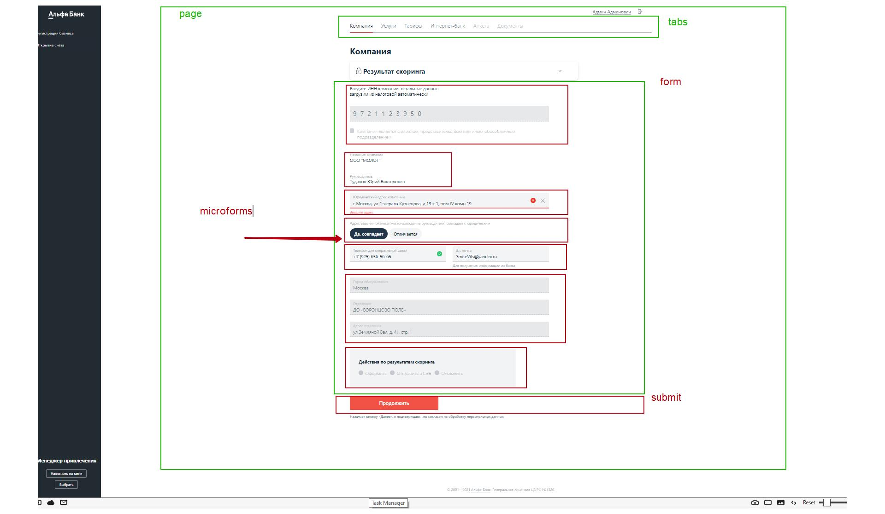

Проблема
https://testjmb.alfabank.ru/ona/
Давайте рассомтрим текущую реализацию
Каким образом кнопка отправить становится активной? Давайте взглянем на код этого участка...
/ona-ao-ui/src/containers/ona/company-info-page/forms/company-branch/company-branch.tsx (CompanyBranch)
/ona-ao-ui/src/containers/ona/company-info-page/forms/company-branch/company-branch.tsx (CompanyBranch)
/ona-ao-ui/src/containers/ona/company-info-page/forms/company-branch/company-branch.tsx (CompanyBranch)
Взглянем где этот компонент используется
/ona-ao-ui/src/containers/ona/company-info-page/forms/company-info-form.tsx (CompanyInfoForm)
Где мы храним данные? (При использовании redux-form)
Супер. Тогда как кнопка Продолжить ставноится активна?
Заглянем внутрь кнопки.
Так, стоп. Слишком сложно.
Какие требования к кнопке?
Кнопка должна быть глупой
Кнопка активна когда ей скажут
При клике, кнопка выполняет те действия, которые ей скажут (диспатч и ли иное)
Ок, взглянем на другие формы
Страница Интернет-банк
По сути видим тоже самое, разрозненные микроформы
Что с кнопкой Продолжить? Ой, совсем другая реализация
Совсем другая...
И так везде...
Это было возможно в рамках небольшого приложения. Но при длинномй "pileline" заявки с большим количеством бизнес логики необходим рефакторинг.
Что же делать? давайте разбираться.
I. Шаг первый
Композиция
Композиция

* Компоненты должны быть глупые
* Должны делать долько одно
* Компоненты делающие на UI одну вешь, должны делать одну весь
II. Шаг второй
Унификация
Унификация
III. Шаг третий
Общее API компонентов